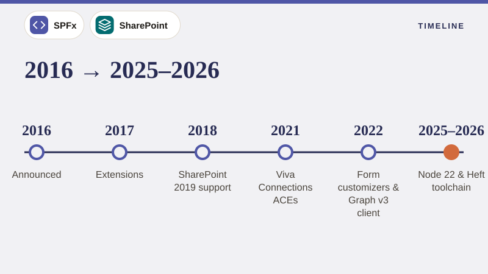

01
What is the SharePoint Framework (SPFx)? Architecture, Components & History
SPFx explained end to end, covering how client-side components run in the page, the component types (web parts, extensions, ACEs, library components, form customizers), where code is hosted, the toolchain, versions from 2017 to 2026, and when to choose SPFx.